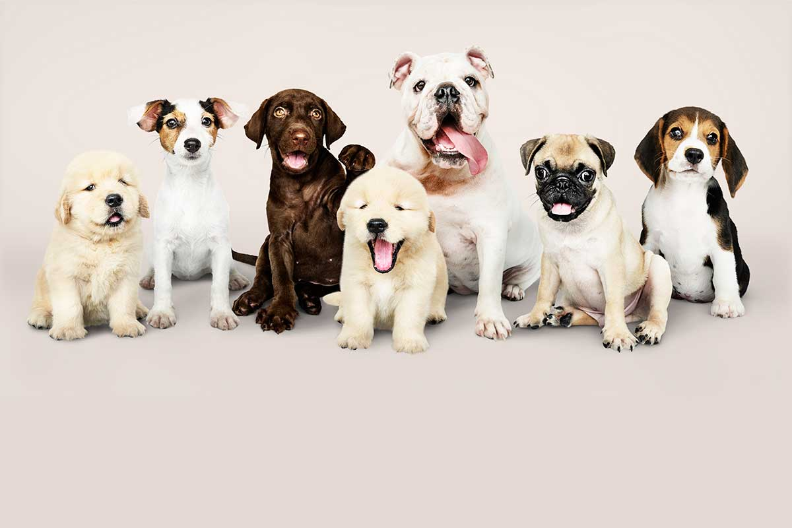

¿POR QUÉ ADOPTAR?
Tener una mascota hará que nunca te sientas solo gracias a su compañía, con ella puedes jugar, hacer ejercicio y hasta usarla de paño de lágrimas en aquellos días grises. Vas a contar con un fiel compañero de vida que se encargará de aportar alegría, amor y diversión al hogar.

Adoptar significa darle una segunda oportunidad a un animal que ha sufrido un proceso de abandono, y en ocasiones maltrato. Acogerlo en tu casa de por vida y darle la estabilidad, los cuidados y el cariño que necesita va a ayudarlo a que recupere su confianza y su autoestima.